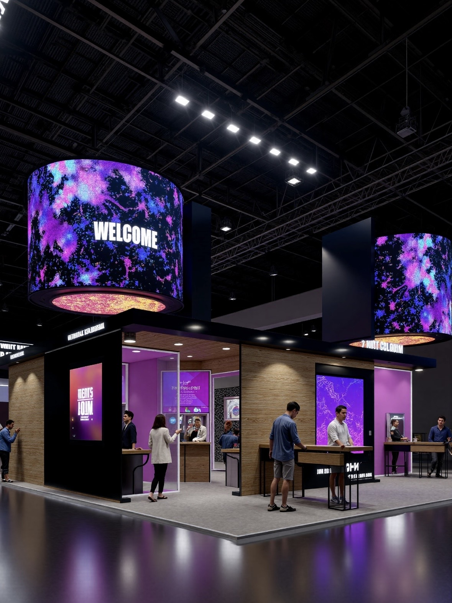

By Cassie
A gym sells an experience that a member can get more cheaply at home, so the environment is the product. Members walk past the same equipment every session, and a wall of screens is what stops the space from feeling like a warehouse of machines. LED display in a fitness centre does three jobs: it turns the cardio zone into something closer to a ride than a workout, it puts class instruction where everyone in the studio can actually read it, and it gives the lobby a reason to display schedules, challenges and member milestones.
Fitness has its own constraints. Ceilings are often high and hard to reach, equipment moves, humidity varies from studio to studio, and any screen running a live class has to be readable while people are moving and sweating. This guide covers the demand drivers behind gym LED projects, the specifications that hold up on a training floor, and the questions operators ask before they commit.
Retention is the business metric that matters in fitness, and it is the metric visual environment moves most directly. A member who cancels in month four has usually lost the habit rather than the results, and the clubs that hold people longest are the ones that keep the room interesting. A large immersive wall in the cardio zone gives the operator something to change weekly. Members notice when the content changes, and that small novelty is enough to keep a session from blurring into the previous one.
The second driver is class capacity. Studios are limited by floor area, and the only way to fit more people into the same room is to run formats that do not depend on every member seeing a single instructor at the front. A well-placed LED wall makes the class content legible from the back row, which lets the studio raise its working density without losing the quality of instruction. That converts directly into revenue per square metre, which is the number a fitness operator is judged on.
Gyms also face a competitive problem that screens solve cheaply. Boutique studios have taken the premium end of the market by building a strong visual identity, and mid-market clubs need to answer that without rebuilding. Adding an LED wall to an existing cardio floor is a fraction of the cost of a refurbishment, and it delivers most of the perceived upgrade. Operators commonly run several screens across a single club: a large wall in the cardio area, a panel or two in the group studio, and one or two in the lobby for schedules and promotions.
Finally, the economics have changed. Panels have become light enough to hang from mezzanine structures and trusses rather than requiring structural work, and efficient power supplies have brought the running cost down to something that disappears into the club's electricity line. High-brightness displays also hold up in rooms with large windows or skylights, which is where LCD video walls have always struggled with reflection.
Start with where people are standing relative to the screen. A cardio wall is watched from two to six metres, often while the member is moving and breathing hard, and a pitch in the P1.5 to P1.9 range keeps the image clean at that distance. Group studio screens are viewed from the back of a room, typically eight to fifteen metres away, so a slightly coarser pitch is entirely acceptable there and frees budget for a larger canvas.
Brightness needs to match the room rather than the screen. A studio with mirrors, windows and high ceilings has far more ambient light than a cardio floor in a basement, and specifying the same panel for both wastes money in one space and underserves the other. Cabinet depth matters too in a studio that operates to music, so quiet cooling is worth insisting on in the specification rather than discovering after installation.
| Application | Series | Cabinet Size | Key Specs | Best Use |
|---|---|---|---|---|
| Cardio Zone Wall | CV-PRO COB P1.9 | 600 x 337.5 mm | COB, 10000:1 contrast, 3840 Hz | Immersive ride and terrain content |
| Group Studio Screen | M-PRO P1.5 | 600 x 337.5 mm | Native 16:9, front service | Class instruction, tempo cues |
| Lobby / Check-in | I-BOARD P1.95 | 750 x 250 / 500 mm | 34.5 mm thin, magnetic front | Schedules, challenges, offers |
| Functional Training Rig | CV-PRO COB P2.6 | 600 x 337.5 mm | Wide viewing angle, sealed face | Interval timers, rep counting |
| Outdoor Bootcamp Zone | D-PRO P5 | 960 x 960 mm | IP65, 8000+ nits, 1920 Hz | Terrace and outdoor training areas |
The cardio zone is where the choice matters most, and the CV-PRO COB range is the right answer for most clubs. COB construction seals the emitter array behind a continuous surface rather than leaving individual lamps exposed, which is exactly what a room full of moving people and shared equipment needs. Contrast is very high, so dark training footage holds detail instead of turning into a grey wash, and the wide viewing angle means the member on the end treadmill sees the same image quality as the one in the middle.
For the studio and the lobby, the M-PRO and I-BOARD formats give the operator standard 16:9 geometry and a slim profile. Both take front service, which matters enormously in a fitness club because the alternative is bringing a lift into a room that is booked for classes most of the day. A thin cabinet also mounts flat against a mirrored wall without boxing out a large cavity behind it.
| Product | Key Features |
|---|---|
| Asia Vision CV-PRO COB P1.5 / P1.9 | Indoor COB panel at 600 x 337.5 mm with 10000:1 contrast, 3840 Hz refresh and a sealed emitter face. Built for cardio walls and functional training areas. |
| Asia Vision M-PRO P1.5 | Native 16:9 indoor panel, 600 x 337.5 mm, front service, quiet operation. Suited to group studios where content is read from the back of the room. |
| Asia Vision I-BOARD P1.95 | Ultra-thin panel, 750 x 250 mm and 750 x 500 mm, 34.5 mm profile, magnetic front service. Used for lobby schedules and promotional messaging. |
| Asia Vision D-PRO P5 | Outdoor cabinet at 960 x 960 mm, IP65 rated and 8000+ nits, for training terraces and outdoor bootcamp areas. |
A gym installation has to survive an environment that is harder on electronics than it looks. Humidity swings, heavy use of cleaning products, constant vibration from treadmills and free weights, and long opening hours all take a toll. Asia Vision Technology builds indoor panels with sealed COB faces and industrial power supplies so that a cardio wall is still performing at year five rather than showing dead pixels in the middle of the most expensive screen in the building.
The range covers the whole club from one supplier. Pixel pitch spans P0.9 to P20, indoor brightness is selectable from 800 to 2500 nits so a sunlit studio and a basement cardio floor can both be specified correctly, and outdoor positions use the D-PRO range at IP65 with 8000+ nits and 1920 Hz or higher refresh. Emitters are rated for a 100,000 hour service life, which is a decade of fourteen hour days, and the standard warranty is three years. Certification covers CE, FCC and RoHS, with UL and ETL available for North American projects and UKCA for the UK.
For an operator running multiple clubs, the practical benefit is repeatability. Cabinets keep the same format across a range so a specification written for the flagship can be reused across the estate, and delivery is quoted at 15 to 20 working days with factory-direct supply that removes distributor margin. Technical guidance is available at the specification stage, which is where a studio screen most often gets sized wrong.
For this requirement our range covers it directly: the COB EF outdoor series (IP65, 3000 nits) and the D-PRO outdoor series (front maintenance).
Ready to upgrade with LED displays?
Contact Asia Vision for specs, pricing, and free consultation.
📩 Get a Quote WhatsApp